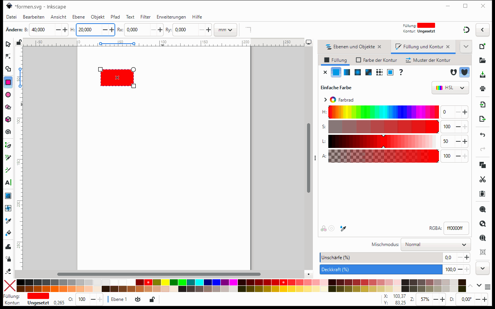
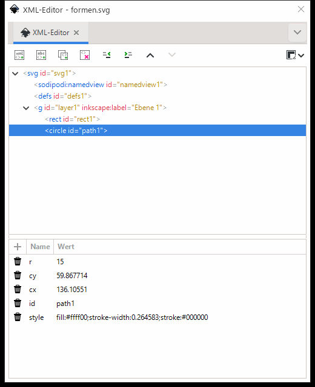

Inkscape starten und das Fenster entdecken
Du zeichnest heute mit . Damit entsteht eine . Beim allerersten Start fragt Inkscape ein paar Dinge. Bring die Schritte in die richtige Reihenfolge – dann klappt es gleich am PC.
✅ Genau so: Das Startfenster hat drei Reiter – „Schnelleinrichtung“, „Unterstützt von Euch“ und „Dokument“ –, und du gehst sie der Reihe nach durch.
Kommt das Fenster bei dir nicht, ist Inkscape schon eingerichtet. Bei dir sieht Inkscape vielleicht dunkel aus. Die Knöpfe sind dieselben.
So sieht Inkscape mit einem neuen Dokument aus. Tippe auf die Punkte.

Bild: Inkscape, eigene Aufnahme
Auf dem Handy: Wische im Bild zur Seite, dann siehst du alle Punkte.
Tippe auf einen Punkt im Bild.
0 von 9 entdeckt
Was brauchst du wofür? Vier davon sind aus der Leiste links.
Rechteck und Kreis
Jede Form in Inkscape ist ein . Es hat eine (innen) und eine (den Rand). Die Farben holst du aus der , die Maße tippst du oben in die Leiste.
Fehler finden: Du suchst die Ursache selbst – mit dem, was du im Auftrag gelernt hast.
Objekt, Attribut, Attributwert
Du hast in Inkscape Zahlen und Farben eingestellt. In Informatik schreibt man das so auf eine Objektkarte. Die Karte deines Rechtecks ist fertig. Schreib die Karte deines Kreises fertig: Tippe eine Lücke an, dann ein Wort.
- Breite = 40 mm
- Höhe = 20 mm
- Füllfarbe = rot
- Konturfarbe = keine
- Drehwinkel = 0°
MERKE
- Ein ist ein Teil der Grafik, zum Beispiel Rechteck1 oder Kreis1.
- Objekte haben , das sind Eigenschaften – zum Beispiel Breite, Höhe, , Füllfarbe, Konturfarbe, Konturbreite, oder Position.
- Ein ist der Wert, den das Attribut gerade hat: 40 mm, rot, 45°.
- So schreibst du es auf: Attribut = Attributwert, zum Beispiel Radius = 15 mm.
Ändere die Attributwerte, bis dein Rechteck genau zur gelben Zielkarte passt.
- Breite = 50 mm
- Höhe = 15 mm
- Füllfarbe = blau
- Drehwinkel = 30°
Attribut oder Attributwert? Tippe eine Karte an und dann das passende Feld.
So steht es in der Datei: der XML-Editor
Inkscape speichert dein Bild als -Datei. Darin steht jedes Objekt mit seinen Attributen. Das zeigt der : → (Umschalt + Strg + X). Oben steht für jedes Objekt eine Zeile, unten die Tabelle „Name | Wert“ des gewählten Objekts.

Die Namen in der Datei sind kurz und englisch:
| In der Datei | Attribut |
|---|---|
r | Radius |
cx, cy | Position der Mitte |
fill | Füllfarbe (#ffff00 = gelb) |
stroke | Konturfarbe (#000000 = schwarz) |
stroke-width | Konturbreite |
In Inkscape stehen fill, stroke und stroke-width zusammen in der Zeile style.
Sieh in deiner eigenen Datei nach – im XML-Editor von Inkscape.
Erkläre in eigenen Worten. Die KI gibt dir einen kurzen Hinweis – nicht die Lösung.
Verschieben und drehen
Mit dem Auswahlwerkzeug (dem Pfeil oben links) packst du ein Objekt an. Ziehst du es weg, änderst du seine Position. Drehst du es, änderst du seinen . Beides sind Attribute.
Was hat sich geändert?
- Breite = 40 mm
- Höhe = 20 mm
- Füllfarbe = rot
- Konturfarbe = keine
- Position = oben links
- Drehwinkel = 0°
- Breite = 40 mm
- Höhe = 20 mm
- Füllfarbe = rot
- Konturfarbe = keine
- Position = unterhalb des Kreises
- Drehwinkel = 45°
Gelb markiert: Diese Attributwerte hast du geändert. Das Objekt und seine anderen Attributwerte bleiben gleich.
Das nimmst du mit
Werkzeug oder Attribut?
Welches macht was?
Wortspeicher
Alle Fachbegriffe dieser Einheit auf einen Blick.
Wie geht es weiter?
Du kannst einzelne Formen zeichnen, färben, drehen und mit Attributen beschreiben. In der nächsten Einheit kopierst, ordnest und gruppierst du Formen und setzt Text dazu – aus einfachen Formen wird ein Bild.